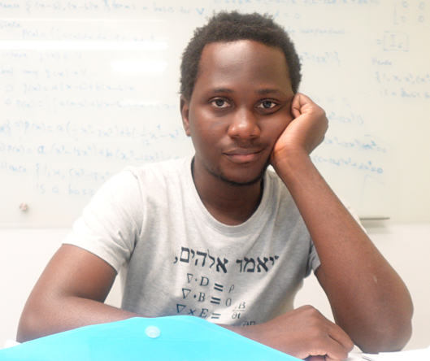

Emmanuel Adebayo

Summary
I am a young graduate with a strong academic background in Applied Mathematics and Machine Learning.
In recent months, I have worked on Data visualizations, Machine learning, and Network science projects.
I am highly proficient in Python programming language and Matlab and for a while now I have been working on inverse problems(recovering true images from blurred or noisy images). I have a great interest in research, learning new skills, and applying what I know to the real world.
Currently, I am seeking internship opportunities in Data Science, ML, Software Engineering, and AI.
Education
- Ph.D in Applied Mathematics - University of Delaware (2022-Present)
- BSc in Applied Mathematics - University of Lagos (2015-2019)
Work Expericence
- Graduate Teaching Assistant - University of Delaware
August 2022 - Present
- Assisted the lead instructor in teaching undergraduate-level mathematics courses, including MATH 242, 243.
- Held regular office hours, assisting an average of five students per week with questions and clarifications.
Skills
Award and Certification
- Silver Honor, International Youth Mathematics Competition (DEC 2021)
- Gold Medalist, National Mathematics Competition, Abuja, Nigeria (April 2019)
- Supervised Machine Learning: Regression and Classification-Deeplearning.AI (2023)
Others